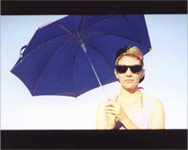

Programmed Seduction
Cornelia Sollfrank tests new models of authorship on the Net
by Ute Vorkoeper, 1999/2003
Cornelia Sollfrank is suspicious of the roles for the artist that are commonly accepted, consciously or unconsciously. She would rather observe, review and reshape what happens around her and borrow her authority from the paragons of the future
with their faith in the markets and technology. So she ceaselessly follows the immaculate, perfectly styled yet humble experts, advertising professionals and consultants who are everywhere all the time for us. Uniform, nameless and all but
without bodies, they've made their quiet way into our living spaces and busily work there towards model solutions for a contemporary social and personal engineering meant to lead us to successful, happy and efficient lives.
Sollfrank steals her styling, takes on gestures, uses her worldly imagery and explores her strategies of making the world anew. She is a manager, an advertising strategist, event organizer and consultant and plays all the roles that promise her
success. But then she'll suddenly switch sides again and become a tricky traitor, a hacker or a revolutionary cyberfeminist.
At the same time, she consistently plays with the fascination associated with the roles she's taken on or the clichés she's chosen and does not ignore the power of seduction inherent in the latest technologies and virtual worlds,
particularly for a well-groomed consultant. She passionately studies every new brochure put out by Deutsche Telekom and excitedly shows her favorite images: Sprightly, nice ladies in front of the newest computer models, a monumental satellite
disk stretching out beneath a romantic sky, resourceful visualizations of data highways.
In the poses and strategies of experts, service providers and advisors as well as in those of the down-and-dirty actionist opponent, she's recognized the most effective means to be present and to draw attention these days. In doing so, she
switches media and addresses different target groups and plays with the most varied institutions and scenes in order to see her own campaigns through. Perfectly costumed, she appears on streets, in studios and galleries, in clubs, at conventions,
on the Internet and entraps her viewers, listeners and conversation partners with stolen or copied images and texts.
What appears to be a fashionable mix of contemporary criticism of author or artist models proves to be a complex intertwining of delusion and disillusion, seduction and responsibility. Sollfrank's artistic programs mimic invisible power
structures and hidden mechanisms in order to explore production, usage and responsibility on the Net. Once seduced or taken over, users are no longer free from questions regarding the maker of a work, those responsible for it or questions
regarding their own or other goals.

[Cornelia Sollfrank on vacation while she has the machines do the work for her.]
Expecting that there would not be many traditional artists, she asked a programmer to develop the first automatic Net-art-generator. She did not have to be a clairvoyant to foresee that there would not be a whole lot of female cyberartists
applying for the Net Art Award from the Hamburger Kunsthalle, so her generator soon helped out with that. Again and again, it crawled through the WWW gathering found images and texts and rebuilding them into new pages. She ascribed the results to
internationally known women's names, transferring them electronically from all around the world, it seemed, to the Hamburger Kunsthalle. Accordingly, she speculated on a further automatic mechanism in the art world: the combination of "name" and
"something" becomes "artist" and work of "art".
Surely this formula has never worked out that well for women. However in Cornelia Sollfrank's "Female Extension" it was fully applied. Each of the 288 women's names entered were unquestionably acknowledged as artists. Even if none of them did
actually obtain the award, the press spokesman proudly referred to the high number of women's entries as a great success. That is symptomatic.
Of course all the pages created by the generator (using several search engines) looked different, but the expert jury should have noticed the fact that they were all produced by one and same program. Both in art and art history one would call
this an "aesthetic program" - and be on the lookout for it. That the significant similarity of the pages did not come to the attention of the Hamburg experts might point to a recurring blindness and thoughtlessness when faced with issues of
authorship and ethics in the digital media.
However, Sollfrank's effective automatisms strike both men and women in the same way. That the surplus of non-authors went unnoticed is just as disturbing as the actual lack of real authors, and responsibility here is shared. It applies to those
who use aesthetic programs without questioning the principles behind them and the results, those unable to break away from prevailing programs which misinterpret usage with creation as well as those fulfilling other's goals instead of developing
programs for their own needs.
"A smart artist makes the machine do the work."
net.art generator
That is why Cornelia Sollfrank has started a new experiment which allows users to test other concepts of authorship on the Net. This time she plays the dark, greedy employer of programmers that generate art works endlessly. Since the idea of
freely available generative programs is also stolen, the homepage of the net.art generators has also been created by an existing web page generator, and it contains links to other poetry, essay, insult, joke, graphic and web page generators.
All her generators follow the same basic principles: to begin with, you enter a search word in the first field and your name or pseudonym in the second field. Then generator_01 and _03 will instantly mix a new page. Whereas the first one is more
graphically oriented, number 03 is geared more towards images. Generator_02 will search and construct a website in about half an hour. The three generators correspond with different search-engines; only generator_02 is based, in addition, on the
so-called "dada engine." Four programmers found very different solutions for the same task.
Attracted, maybe, by the casual aesthetics or by being passively creative, we send the generators to search, appropriate and remix. That's fun, which is the reason the generated net.art archives are growing so quickly. The art machines are
visited daily, finding constantly different versions even for identical search words. Each user can claim authorship over her or his input results, yet most of them prefer to stay anonymous.
At the same time, we as users are assistants to the artist who collects our images under her name. Some of them she exposes, frames and exhibits in gallery spaces, for example, in her show at the City Gallery in Bremen, at Gallery 21 in
Malmö or as part of the GENERATOR show at Minories Art Gallery in Colchester, GB. Her "signature" appearing below the generated pictures is both a Duchampian gesture and Broodthaer-like play with the institutional framework. The generator
project becomes even more paradoxical when displaying the user's participation. On the one hand, it breaks with existing categories and hierarchies, while on the other, it shows how these remain persistently installed somewhere in the background
and can be abused.
In the meantime, we realize that we have always equated art production with repetition, robbery, quotation, consumption, appropriation and combination. We notice as well that we love to stay anonymous, not wanting to assume any responsibility. We
are ready to comply with the aesthetic tenets of some programmer. If, in the end, the results remain too similar or our initial amusement at the colourful pages fades into boredom or perplexity, it is too late anyway. We have taken the next step
in the program's design: the results stemming from our inputs are immediately appropriated by the artist. As she points out herself: "A smart artist makes the machine do the work." However, she still does not reveal the whole truth: "A smart
artist orders programs which make the user do the work." The generators and their users keep on working, feeding the myth of authorlessness while multiplying Cornelia Sollfrank's fame.
We can hear her laughing in the background as we complete the "artistic" program. Although it promises amusement and pleasure, it has made us accomplices to an artist who uses us to collect images from the web. Soon she will display the
automatically generated images as a salon - those willing to assist her should try it out and go to: http://net.art-generator.com
1. Generator_02 is currently not working, but its principles can b e followed by looking into its archives.